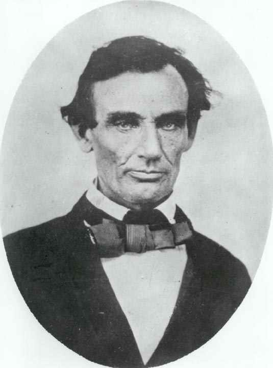

ABRAHAM LINCOLN 1809-1865
Presiden
Amerika Serikat ke- 16 ini, Abraham Lincoln, salah seorang
yang paling termasyhur dan tokoh politik yang mengagumkan
yang pernah dipunyai Amerika Serikat --atau negeri mana pun
juga. Nah, kalau begitu halnya, sebab apa dia tidak termasuk
dalam daftar urutan utama? Apakah pembebasan 3.500.000 budak
belian bukan suatu karya besar?
Memang begitu. Tetapi, bila kita tengok ke belakang, akan
tampaklah bahwa kekuatan di seluruh dunia memang berjuang
keras tak tertahankan oleh kekuatan apa pun untuk
melenyapkan segala bentuk perbudakan. Banyak negara-negara
telah menghapuskan sistem perbudakan bahkan sebelum Lincoln
memerintah, dan dalam tempo lima puluh lima tahun sesudah
meninggalnya, sebagian besar negara berbuat begitu. Yang
paling bisa dihargai dari karya Lincoln adalah mempercepat
proses itu di suatu negeri, Amerika Serikat.
Walau bagaimanapun, jasa hasil karya Lincoln terbesar
adalah mempertahankan kesatuan Amerika Serikat menghadapi
usaha pemisahan diri negara-negara bagian sebelah selatan
negeri. Untuk perbuatan ini saja dia berhak dicantumkan
dalam daftar urutan buku ini.
Tetapi, melalui pemilihan Lincoln-lah yang jadi sebab
pemisahan negara-negara bagian sebelah selatan itu. Dan
tidak juga bisa dipastikan Utara akan gagal memenangkan
perang saudara apabila orang selain Lincoln jadi presiden.
Dan di atas segala-galanya, Utara membuka peperangan dengan
modal yang lebih unggul ditilik dari sudut jumlah penduduk
dan juga lebih besar dalam hasil industri.
Bahkan apabila Utara tidak memenangkan perang, secara
keseluruhan jalannya sejarah tidak akan mengalami perubahan
besar. Kaitan bahasa, agama, kebudayaan dan perdagangan
antara Utara dan Selatan begitu eratnya keduanya akan
bersatu juga. Jikalau perpecahan berlangsung selama dua
puluh tahun, atau taruhlah, lima puluh tahun, ini pun hanya
merupakan peristiwa kecil saja dalam sejarah dunia. (Layak
diingat bahwa meski tanpa Selatan, Amerika Serikat sekarang
tetap jadi negeri nomor empat terbesar penduduknya di dunia,
dan akan tetap jadi negeri industri yang paling
terkemuka).
Apakah ini berarti Lincoln tokoh yang samasekali tak
penting? Samasekali bukan. Kariernya telah memberi pengaruh
mendalam kepada jutaan orang dalam satu generasi. Namun, dia
belum setara pentingnya seperti Mahavira yang pengaruhnya
berlangsung terus berabad-abad.
|